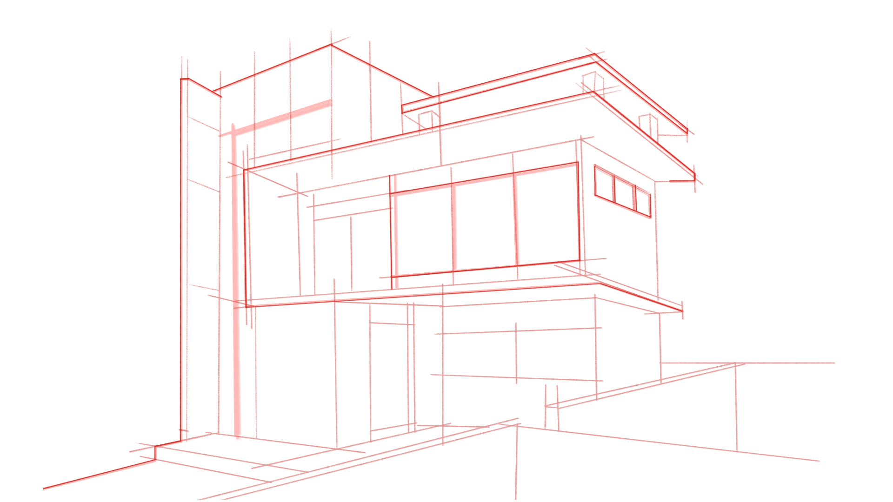

Performance
Strips unnecessary background processes so your hardware processes large catalogs and media files quickly.
Ready to Rock

Radova Linux gives you the true speed without the weekend-long setup. Stripped of bloat and tuned with sensible defaults — just boot, sign in, and start building.
Manage your assets flawlessly
Radova Linux delivers an autonomous operating system built for institutional memory, archives, and digital asset sovereignty.
Strips unnecessary background processes so your hardware processes large catalogs and media files quickly.
Protects institutional databases and local archives through strict Linux kernel security and access controls.
Upload, tag, and retrieve institutional assets using the centralized application.
Hold complete institutional ownership over your catalogs, archives, and digital files on Linux.
"Today must be better than tomorrow"
- null
Launch the pre-integrated Memora application directly from your desktop to run library operations.
Access the pre-installed Evrocks application immediately without setting up external archival software manually.
Open the built-in Coretez platform to handle digital asset management right after booting.
Manage institutional repositories and academic works immediately through the pre-configured Linkers platform.
Radova Linux runs effortlessly on existing library computers and modern archival workstations alike.
x86_64 Dual-Core 1.5 GHz
Supports standard 64-bit Intel and AMD processors to run Memora, Evrocks, and Coretez smoothly.
2 GB RAM
Leaves plenty of memory headroom to index library catalogs and browse digital archives simultaneously.
20 GB Storage Space
Compact base installation with full-disk encryption to protect institutional records and local digital assets.
1024×768 Resolution
Works on integrated Intel or AMD graphics and virtualized displays for clear document viewing.